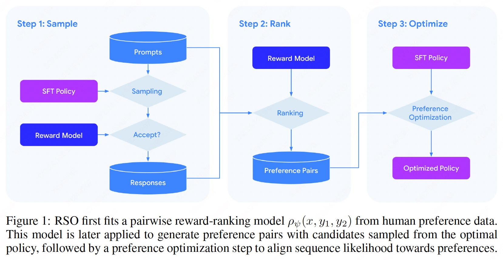
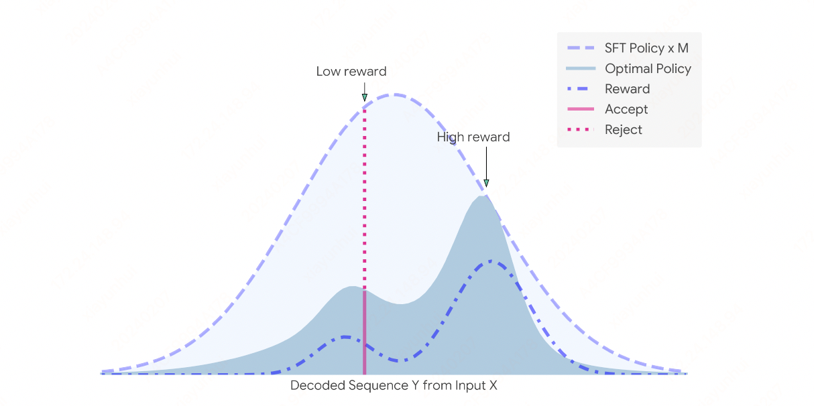

RSO#
Note
The maximum likelihood estimator (MLE) of the target optimal policy requires labeled preference pairs sampled from that policy, DPO’s lack of a reward model constrains its ability to sample preference pairs from the optimal policy. To address these limitations, we introduce a novel approach called Statistical Rejection Sampling Optimization (RSO) that aims to source preference data from the target optimal policy using rejection sampling.
Preliminaries#
Learning from Human Feedback algorithms take two inputs:
\(\pi_{\text{sft}}(y|x):\) a supervised fine-tuned policy (SFT), where \(x\) is the prompt and \(y\) is the response.
\(\mathcal{D}_{\text{hf}} = \{x^{(i)}, y_{w}^{(i)}, y_{l}^{(i)}\}_{i=1}^{N}:\) a human preference dataset that distinguishes the better response from the worse given the same prompt.
KL-Constrained Reward Maximization Objective Starting with a reward function \(r(x, y)\) and input prompt distribution \(\mathcal{P}\), the DPO and RLHF optimizes for the following objective:
Optimal Policy DPO showed that the optimal policy \(\pi_{r}(y|x)\) that maximizes the above objective is:
for all \(x\in\mathcal{P}\), where \(Z(x) = \sum_{y}\pi_{\text{sft}}(y|x)\exp(\frac{1}{\beta}r(x, y))\). Rearrange the Equation we get
These two equations establish the relation between optimal policy and the reward function. One can infer the other. In reality, the final goal is to have a good policy for response generation and \(\pi_{r}(y|x)\) is usually of more interest. The key is to effectively estimate the \(\pi_{r}(y|x)\) from the human preference data.
Preference Model Let the ground-truth reward function be \(r^{\ast}\), and let \(\pi^{\ast}\) be the optimal policy associated with \(r^{\ast}\). For two responses \((y_{1}, y_{2})\) from the same input \(x\), one can assume that
where \(g:\mathbb{R}\to[0, 1]\) is a monotonically non-decreasing function that converts the reward difference into winning probability. Specifically, if we set \(g\) as sigmoid function \(\sigma\), we get the Bradley-Terry (BT) model.
Policy Estimation on Preference Pairs In statistical density estimation problem, the preference pairs should be generated from \(\pi^{\ast}\), the density to be estimated, while DPO uses preference pairs from some unknown distribution. Thus DPO is not the MLE of \(\pi^{\ast}\), this motivates us to develop an approach that can obtain preference pairs from \(\pi^{\ast}\).
Reward Model Usually the reward model is a pointwise score assigned to a (prompt, response) pair. The model is trained based on BT model. We argue that it is an easier and more straightforward way to train a pairwise reward model from (prompt, worse response, better response) triplets.
RSO APPROACH#

Choice of preference data distribution In reality, we have access to \(\mathcal{D}_{\text{hf}} = \{(x^{(i)}, y_{w}^{(i)}, y_{l}^{(i)})| y_{w}^{(i)}, y_{l}^{(i)}\sim \pi_{\text{unk}}(y|x^{(i)})\}\) where \(\pi_{\text{unk}}\) denotes some mixed unknown policies. The mixed unknown policies can include SFT policy, current RLHF policy, or policies from other agents, or even web mined preference pairs.
Given \(\mathcal{D}_{\text{hf}}\), we consider the following three choices:
directly fit the policy on \(\mathcal{D}_{\text{hf}}\), this is the approach used in DPO.
first train a reward-ranking model \(\rho_{\psi}(x, y_{1}, y_{2})\) on \(\mathcal{D}_{\text{hf}}\). Then use \(\pi_{\text{sft}}(y|x)\) to sample response pairs and label them by \(\rho_{\psi}\). The results in a preference dataset \(\mathcal{D}_{\text{sft}}\).
first train a reward-ranking model \(\rho_{\psi}(x, y_{1}, y_{2})\) on \(\mathcal{D}_{\text{hf}}\). Then use \(\pi_{r_{\psi}}(y|x)\) induced by \(r_{\psi}\) to sample response pairs, where \(r_{\psi}\) is induced from \(\rho_{\psi}(x, y_{1}, y_{2})\). After that we label response pairs using \(\rho_{\psi}\) to construct the preference dataset \(\mathcal{D}_{r_{\psi}}\).
Statistically speaking, since we are estimating \(\pi^{\ast}(y|x)\), it is desired to draw samples from \(\pi^{\ast}(y|x)\). \(\pi_{r_{\psi}}\) is closer to \(\pi^{\ast}\) than \(\pi_{\text{unk}}\) used in direct and \(\pi_{\text{sft}}\) used in sft-sample-rank. However, sampling from \(\pi_{r_{\psi}}\) is not straightforward, and we propose a statistical rejection sampling approach to achieve this.
STATISTICAL REJECTION SAMPLING ALGORITHM#

If we want to generate a distribution of density \(\pi_{r_{\psi}}\), we can:
Generate \(y\sim\pi_{\text{sft}}(y|x)\) and \(u\sim U[0, 1]\).
Let \(M = \min\{m| m\cdot\pi_{\text{sft}}(y|x) \ge \pi_{r_{\psi}}(y|x) \text{ for all } y\}\). If \(u<\frac{\pi_{\psi}(y|x)}{M\pi_{\text{sft}}(y|x)}\), then we accept \(y\), otherwise, we reject \(y\).
Derivation of Statistical Rejection Sampling Algorithm: We have
which is equivalent to
Let \(M_{D_{x}} = \min\{m|m\cdot\pi_{\text{sft}}(y|x) \ge \pi_{r_{\psi}}(y|x) \text{ for all } y\notin D_{x}\} = \max_{y\notin D_{x}}\frac{\pi_{r_{\psi}}(y|x)}{\pi_{\text{sft}}(y|x)}\), then
Then we have
from typing import List
import numpy as np
def conduct_rejection_sampling(response_candidates: List[str],
response_rewards: List[float],
num_samples: int,
beta: float) -> List[str]:
"""
Conducts rejection sampling guided by rewards.
Args:
response_candidates: Response candidates from sft policy.
response_rewards: Response rewards corresponding to each candidate.
num_samples: Number of samples to sub-sample.
beta: Beta parameter in KL-constrained reward maximization objective.
Returns:
A list of rejection sampled sequences from the optimal policy.
"""
# Combine candidates and their rewards into a dictionary for easy access
candidates = {candidate: reward for candidate, reward in zip(response_candidates, response_rewards)}
# List to store accepted candidates
accepted = []
# Continue sampling until we have the desired number of samples
while len(accepted) < num_samples:
# Find the maximum reward among the candidates
max_reward = max(candidates.values())
# List to track candidates to be removed after iteration
to_remove = []
# Iterate through candidates and perform rejection sampling
for candidate, reward in candidates.items():
# Sample a uniform random number
u = np.random.uniform()
# Accept the candidate based on the comparison with max_reward adjusted by beta
if u < np.exp((reward - max_reward) / beta):
accepted.append(candidate)
to_remove.append(candidate)
# Break if we have enough samples
if len(accepted) == num_samples:
break
# Remove accepted candidates from the pool to avoid re-sampling
for candidate in to_remove:
candidates.pop(candidate)
return accepted